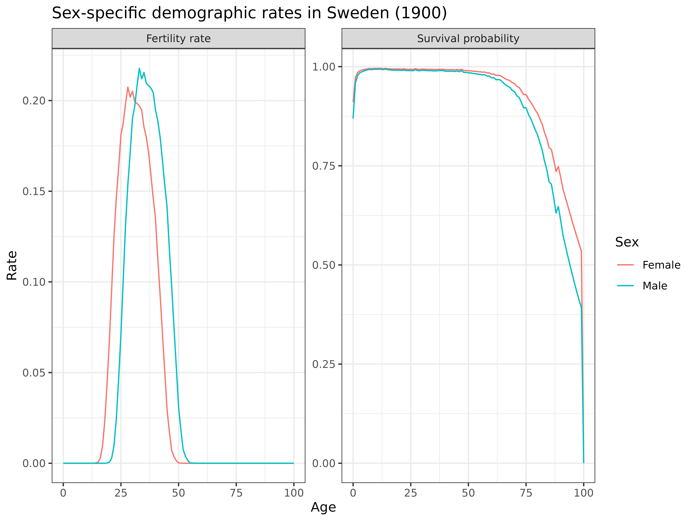
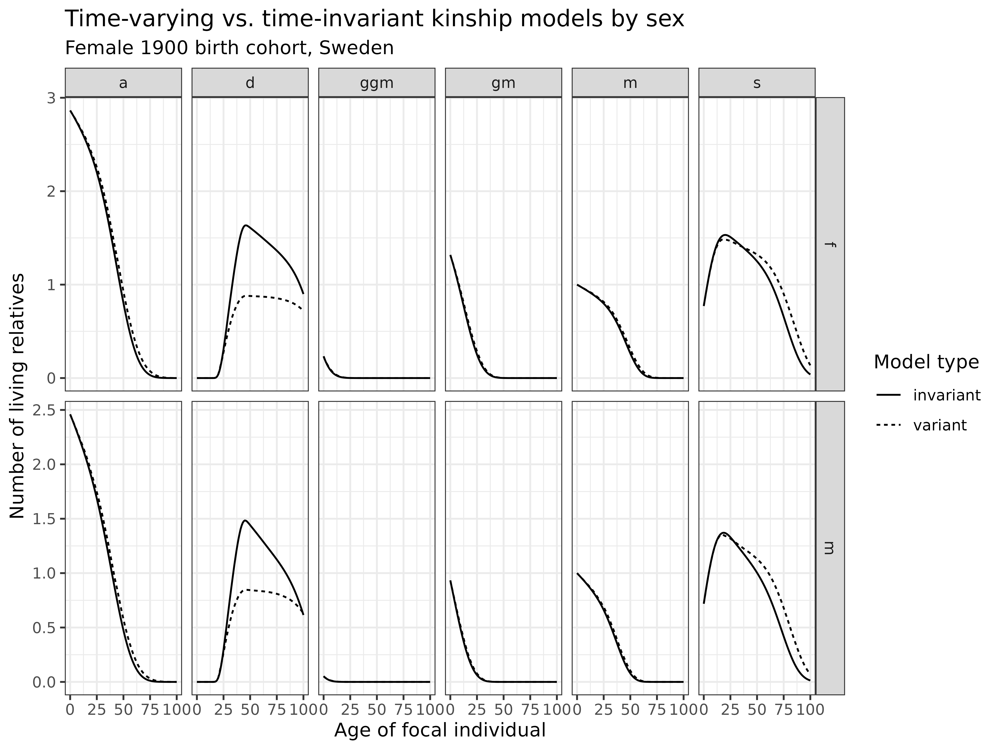
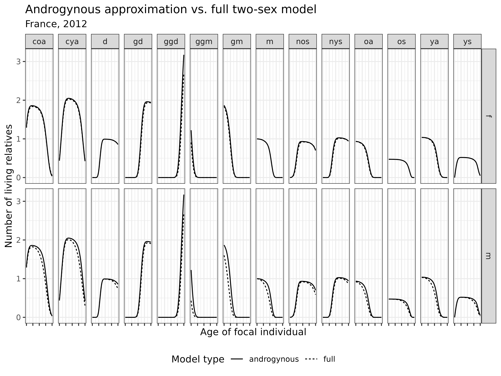
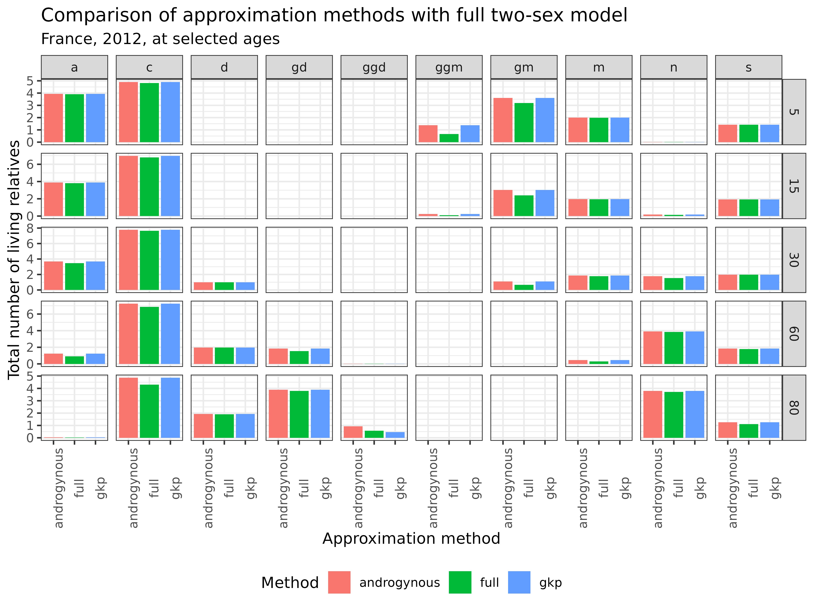
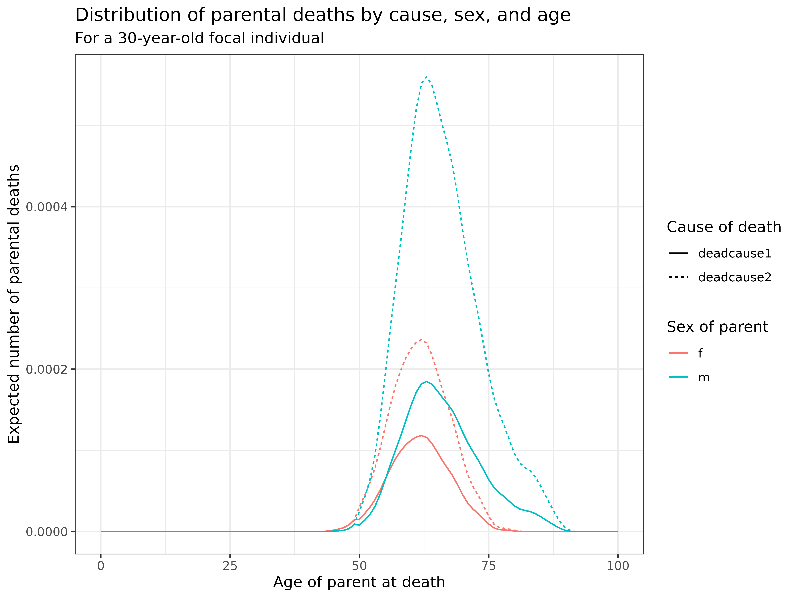

Two-sex time-varying kinship model specified by age
Source:vignettes/1_4_TwoSex_TimeVarying_Age.Rmd
1_4_TwoSex_TimeVarying_Age.RmdLearning Objectives: In this vignette, you will learn how to implement a kinship model that combines both two-sex and time-varying approaches. You will understand how to incorporate sex-specific demographic rates that change over time, analyze the effects of demographic transition on kinship structures by sex, and explore approximation methods when data is limited.
Introduction
Family networks are shaped simultaneously by two fundamental forces:
demographic differences between males and females, and historical
changes in demographic rates over time. While previous vignettes have
explored these dimensions separately, this vignette integrates them into
a more comprehensive framework: a two-sex time-varying kinship
model, outlined in Caswell (2022), using the kin2sex function
with time_invariant = FALSE.
Package Installation
If you haven’t already installed the required packages from the previous vignettes, here’s what you’ll need:
# Install basic data analysis packages
install.packages("dplyr") # Data manipulation
install.packages("tidyr") # Data tidying
install.packages("ggplot2") # Data visualization
install.packages("knitr") # Document generation
install.packages("data.table")# Efficient data handling
install.packages("Matrix") # Matrix operations
# Install DemoKin
# DemoKin is available on CRAN (https://cran.r-project.org/web/packages/DemoKin/index.html),
# but we'll use the development version on GitHub (https://github.com/IvanWilli/DemoKin):
install.packages("remotes")
remotes::install_github("IvanWilli/DemoKin")
library(DemoKin) # For kinship analysisTwo-Sex Time-Varying Kinship Models
Model Structure and Components
The combined two-sex time-varying kinship model expands on previous models by requiring:
- Sex-specific mortality rates over time: How survival differs between males and females across historical periods
- Sex-specific fertility rates over time: How fertility patterns differ between males and females across historical periods
- Sex ratio at birth: The proportion of births that are female
- Sex of the focal individual: Whether we’re analyzing male or female kinship networks
Data Preparation
For this vignette, we’ll use Swedish demographic data from the
DemoKin package. However, since the package only includes
female fertility and mortality data over time, we’ll create synthetic
male rates for illustration purposes.
In a real-world application, you would ideally use actual male rates. Here, we’ll create male rates by applying transformations to the female rates:
# Extract dimensions of the data
years <- ncol(swe_px)
ages <- nrow(swe_px)
# Use female rates directly from the package
swe_surv_f_matrix <- swe_px
swe_fert_f_matrix <- swe_asfr
# Create synthetic male rates
# Male survival: Lower than female (raising to power 1.5 reduces values)
swe_surv_m_matrix <- swe_px ^ 1.5 # artificial perturbation for this example
# Male fertility: Shifted to slightly older ages and slightly higher
swe_fert_m_matrix <- rbind(matrix(0, 5, years),
swe_asfr[-((ages-4):ages),]) * 1.05 # artificial perturbation for this exampleLet’s examine the resulting rates for a specific year (1900) to verify they follow expected patterns:
bind_rows(
data.frame(age = 0:100, sex = "Female", component = "Fertility rate", value = swe_fert_f_matrix[,"1900"]),
data.frame(age = 0:100, sex = "Male", component = "Fertility rate", value = swe_fert_m_matrix[,"1900"]),
data.frame(age = 0:100, sex = "Female", component = "Survival probability", value = swe_surv_f_matrix[,"1900"]),
data.frame(age = 0:100, sex = "Male", component = "Survival probability", value = swe_surv_m_matrix[,"1900"])) %>%
ggplot(aes(age, value, col = sex)) +
geom_line() +
theme_bw() +
facet_wrap(~component, scales = "free") +
labs(
title = "Sex-specific demographic rates in Sweden (1900)",
x = "Age",
y = "Rate",
color = "Sex"
)
Interpretation: The plot confirms our synthetic rates follow expected patterns:
- Fertility: Male fertility is shifted to slightly older ages compared to female fertility
- Survival: Male survival probabilities are lower than female survival at all ages
- Both rates show characteristic age patterns: fertility concentrated in reproductive ages, and survival declining with age
Running the Two-Sex Time-Varying Model
Now, let’s implement the two-sex time-varying kinship model using the
kin2sex function with
time_invariant = FALSE:
kin_out_time_varying <- kin2sex(
pf = swe_surv_f_matrix, # Female survival matrix (age x year)
pm = swe_surv_m_matrix, # Male survival matrix (age x year)
ff = swe_fert_f_matrix, # Female fertility matrix (age x year)
fm = swe_fert_m_matrix, # Male fertility matrix (age x year)
sex_focal = "f", # Focal individual is female
time_invariant = FALSE, # Use time-varying model
birth_female = .5, # Sex ratio at birth (50% female)
output_cohort = 1900 # Focus on the 1900 birth cohort
)The resulting output provides detailed information on the kinship network for the 1900 female birth cohort, with relatives classified by both age and sex.
Comparing Time-Varying and Time-Invariant Models
To understand the impact of incorporating historical demographic change, let’s compare the time-varying model with a time-invariant model that uses only 1900 rates:
# Run a time-invariant model using only 1900 rates
kin_out_time_invariant <- kin2sex(
pf = swe_surv_f_matrix[,"1900"], # Female survival (1900)
pm = swe_surv_m_matrix[,"1900"], # Male survival (1900)
ff = swe_fert_f_matrix[,"1900"], # Female fertility (1900)
fm = swe_fert_m_matrix[,"1900"], # Male fertility (1900)
sex_focal = "f", # Focal individual is female
birth_female = .5 # Sex ratio at birth (50% female)
)
# Combine and plot the results
kin_out_time_varying$kin_summary %>%
filter(cohort == 1900) %>%
mutate(type = "variant") %>%
bind_rows(kin_out_time_invariant$kin_summary %>% mutate(type = "invariant")) %>%
# Combine siblings and aunts/uncles for simplicity
mutate(kin = case_when(kin %in% c("ys", "os") ~ "s",
kin %in% c("ya", "oa") ~ "a",
TRUE ~ kin)) %>%
# Select key relationships
filter(kin %in% c("d", "m", "gm", "ggm", "s", "a")) %>%
# Group by relationship type, age, sex, and model type
group_by(type, kin, age_focal, sex_kin) %>%
summarise(count = sum(count_living)) %>%
# Create plot
ggplot(aes(age_focal, count, linetype = type)) +
geom_line() +
theme_bw() +
facet_grid(cols = vars(kin), rows = vars(sex_kin), scales = "free") +
labs(
title = "Time-varying vs. time-invariant kinship models by sex",
subtitle = "Female 1900 birth cohort, Sweden",
x = "Age of focal individual",
y = "Number of living relatives",
linetype = "Model type"
)
Interpretation: This comparison reveals important differences between time-varying and time-invariant models:
- Relatives by sex: The differences are pronounced for both male kin (bottom row) and female kin (top row), where mortality improvements over time led to greater availability than predicted by the time-invariant model
- Ascending generations: For parents (m), grandparents (gm), and great-grandparents (ggm), the time-varying model shows higher kin availability at older ages, reflecting mortality improvements not captured by the time-invariant model
- Descendants: For children (d), the time-varying model shows fewer kin, reflecting fertility decline over time
- Kin of same generation: For siblings (s), fertility decline over time has limited impact on their numbers because these fertility events have either already occurred or will occur very shortly. Instead, mortality improvements play a more critical role, leading the time-varying model to predict a higher number of surviving siblings at older ages.
The time-varying model captures the demographic transition that occurred over the 20th century, including declining fertility and mortality rates. This produces a more accurate representation of kinship dynamics for historical cohorts.
Approximation Methods for Limited Data
In practice, demographic data is often limited, particularly for male fertility rates which can be difficult to obtain. Caswell (2022) introduced two approximation methods to estimate two-sex kinship networks when male demographic rates are unavailable:
- Androgynous approximation: Assumes equal fertility and survival for males and females
- GKP factors: Applies multipliers to one-sex kin counts based on theoretical considerations in Goodman, Keyfitz and Pullum (2022)
Let’s evaluate these approximations using French data from the
DemoKin package:
Androgynous Approximation
The androgynous approximation uses female rates for both sexes. Let’s compare it to the full two-sex model:
# Load data of France again
fra_fert_f <- fra_asfr_sex[,"ff"] # Female fertility rates
fra_fert_m <- fra_asfr_sex[,"fm"] # Male fertility rates
fra_surv_f <- fra_surv_sex[,"pf"] # Female survival probabilities
fra_surv_m <- fra_surv_sex[,"pm"] # Male survival probabilities
# Full two-sex model
kin_out <- kin2sex(fra_surv_f, fra_surv_m, fra_fert_f, fra_fert_m,
sex_focal = "f", birth_female = .5)
# Androgynous approximation
kin_out_androgynous <- kin2sex(fra_surv_f, fra_surv_f, fra_fert_f, fra_fert_f,
sex_focal = "f", birth_female = .5)
# Compare the results
bind_rows(
kin_out$kin_summary %>% mutate(type = "full"),
kin_out_androgynous$kin_summary %>% mutate(type = "androgynous")) %>%
group_by(kin, age_focal, sex_kin, type) %>%
summarise(count = sum(count_living)) %>%
ggplot(aes(age_focal, count, linetype = type)) +
geom_line() +
theme_bw() +
theme(legend.position = "bottom", axis.text.x = element_blank()) +
facet_grid(row = vars(sex_kin), col = vars(kin), scales = "free") +
labs(
title = "Androgynous approximation vs. full two-sex model",
subtitle = "France, 2012",
x = "Age of focal individual",
y = "Number of living relatives",
linetype = "Model type"
)
Interpretation: The androgynous approximation performs well for most kin types, particularly for female relatives. However, it shows noticeable discrepancies for most types of male relatives, where ignoring male-specific mortality leads to overestimation.
GKP Factors Approximation
The GKP factors approach applies theoretical multipliers to one-sex kin counts. Let’s implement and evaluate this approach:
# One-sex model
kin_out_1sex <- kin(fra_surv_f, fra_fert_f, birth_female = .5)
# Apply GKP factors
kin_out_GKP <- kin_out_1sex$kin_summary %>%
mutate(count_living = case_when(
kin == "m" ~ count_living * 2, # Parents: multiply by 2
kin == "gm" ~ count_living * 4, # Grandparents: multiply by 4
kin == "ggm" ~ count_living * 8, # Great-grandparents: multiply by 8
kin == "d" ~ count_living * 2, # Children: multiply by 2
kin == "gd" ~ count_living * 4, # Grandchildren: multiply by 4
kin == "ggd" ~ count_living * 4, # Great-grandchildren: multiply by 4
kin == "oa" ~ count_living * 4, # Older aunts/uncles: multiply by 4
kin == "ya" ~ count_living * 4, # Younger aunts/uncles: multiply by 4
kin == "os" ~ count_living * 2, # Older siblings: multiply by 2
kin == "ys" ~ count_living * 2, # Younger siblings: multiply by 2
kin == "coa" ~ count_living * 8, # Cousins (older): multiply by 8
kin == "cya" ~ count_living * 8, # Cousins (younger): multiply by 8
kin == "nos" ~ count_living * 4, # Nieces/nephews (older): multiply by 4
kin == "nys" ~ count_living * 4 # Nieces/nephews (younger): multiply by 4
))
# Compare approaches at selected ages
bind_rows(
kin_out$kin_summary %>% mutate(type = "full"),
kin_out_androgynous$kin_summary %>% mutate(type = "androgynous"),
kin_out_GKP %>% mutate(type = "gkp")) %>%
# Combine siblings, aunts/uncles, cousins, and nieces/nephews
mutate(kin = case_when(
kin %in% c("ys", "os") ~ "s", # All siblings
kin %in% c("ya", "oa") ~ "a", # All aunts/uncles
kin %in% c("coa", "cya") ~ "c", # All cousins
kin %in% c("nys", "nos") ~ "n", # All nieces/nephews
TRUE ~ kin)) %>%
# Select specific ages for comparison
filter(age_focal %in% c(5, 15, 30, 60, 80)) %>%
# Sum across sex for total kin counts
group_by(kin, age_focal, type) %>%
summarise(count = sum(count_living)) %>%
# Create bar chart
ggplot(aes(type, count)) +
geom_bar(aes(fill = type), stat = "identity") +
theme_bw() +
theme(axis.text.x = element_text(angle = 90), legend.position = "bottom") +
facet_grid(col = vars(kin), row = vars(age_focal), scales = "free") +
labs(
title = "Comparison of approximation methods with full two-sex model",
subtitle = "France, 2012, at selected ages",
x = "Approximation method",
y = "Total number of living relatives",
fill = "Method"
)
Interpretation: This comparison shows that both approximation methods produce reasonable estimates for most kin types. Overall, these approximations offer practical alternatives when sex-specific data is limited, though they should be used with caution and their limitations understood.
Incorporating Causes of Death
The kin2sex function also allows for the analysis of
kinship networks by cause of death, providing insights into how
different mortality causes affect kin availability. More details about
kin bereavement methodology can be found in Caswell, Margolis and
Verdery (2023). Let’s implement a simple
cause-of-death model with two competing causes.
Now assume we have two causes of death (COD). For females, the risk of the first COD is half the risk of the second COD for ages greater than 50. For males, the risk of the first COD is 2/3 of the second COD for ages greater than 50. We operationalize this using two matrices with dimension 2 by 101 (number of causes by number of ages).
# Create matrices of relative risks by cause, sex, and age
Hf <- matrix(c(.5, 1), nrow = 2, ncol = length(fra_surv_f)) # Female risk factors
Hm <- matrix(c(.33, 1), nrow = 2, ncol = length(fra_surv_f)) # Male risk factors
# Set equal risks for ages below 50
Hf[,1:50] <- Hm[,1:50] <- 1Now we’ll run the two-sex model with cause of death information:
kin_out_cod_invariant <- kin2sex(
pf = fra_surv_f, # Female survival
pm = fra_surv_m, # Male survival
ff = fra_fert_f, # Female fertility
fm = fra_fert_m, # Male fertility
Hf = Hf, # Female cause-specific risk factors
Hm = Hm, # Male cause-specific risk factors
time_invariant = TRUE # Using time-invariant model for simplicity
)Let’s examine the structure of the output:
head(kin_out_cod_invariant)## # A tibble: 6 × 9
## year cohort age_focal sex_kin kin age_kin living deadcause1 deadcause2
## <lgl> <lgl> <int> <chr> <chr> <int> <dbl> <dbl> <dbl>
## 1 NA NA 0 f d 0 0 0 0
## 2 NA NA 1 f d 0 0 0 0
## 3 NA NA 2 f d 0 0 0 0
## 4 NA NA 3 f d 0 0 0 0
## 5 NA NA 4 f d 0 0 0 0
## 6 NA NA 5 f d 0 0 0 0The output now includes additional columns for each cause of death. Let’s visualize the distribution of parental deaths by cause, sex, and age for a 30-year-old Focal:
kin_out_cod_invariant %>%
filter(kin == "m", age_focal == 30) %>%
summarise(deadcause1 = sum(deadcause1),
deadcause2 = sum(deadcause2), .by = c(age_kin, sex_kin)) %>%
pivot_longer(deadcause1:deadcause2) %>%
ggplot(aes(age_kin, value, col = sex_kin, linetype = name)) +
geom_line() +
labs(
title = "Distribution of parental deaths by cause, sex, and age",
subtitle = "For a 30-year-old focal individual",
x = "Age of parent at death",
y = "Expected number of parental deaths",
color = "Sex of parent",
linetype = "Cause of death"
) +
theme_bw()
Interpretation: This visualization shows the distribution of parental deaths by cause:
- Timing: In this simplified example, all parental deaths occur after age 50
- Sex differences: Male parents (fathers) show higher death counts at earlier ages, reflecting their higher mortality
- Cause differences: The relative importance of different causes varies by sex, with males showing a different distribution than females
This approach can be extended to include more causes of death and to incorporate time-varying cause-specific mortality, though this would require more complex data inputs.
Conclusion
In this vignette, we’ve explored how to implement two-sex
time-varying kinship models using the DemoKin package.
These models provide a more comprehensive framework for understanding
kinship dynamics by incorporating both sex differences and historical
demographic change.
Key insights include:
- Time-varying models capture the effects of demographic transition on kinship networks
- Sex-specific models reveal important differences in the availability of male versus female relatives
- Approximation methods offer practical alternatives when data is limited
- Cause-of-death extensions provide insights into how different mortality causes shape kinship structures
These advanced models enhance our understanding of gender and family dynamics across demographic transitions, offering valuable tools for demographic analysis, care planning, and social policy development in aging societies.